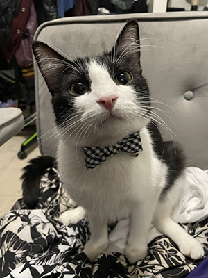
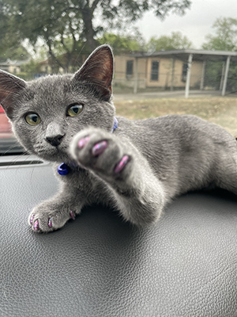

Welcome to my cat website I am excitied you are here
This is Mars and Raven. Mars is a distinguished gentlemen and Raven is a girly diva.These are my cats which I love very much.
  Fun Cat Fact Of The Day:
Cats are believed to be the only mammals who don't taste sweetness.
Here is a picture of me and some facts about me
My Mission Statment:
I’m building a fun and welcoming space where cat lovers can come together to laugh, learn, and celebrate everything that makes cats amazing. My goal is to share joy and spread knowledge through fun facts, adorable videos, adoptable cats, and ways for users to show off your own furry friends. I want this to be more than just a website—it’s a community where we can all connect, learn new things, and appreciate the special bond we share with our cats.
Many cats and dogs in shelters are waiting for a loving forever home. If you're considering adopting a pet, choose a shelter or rescue—you’ll be giving an animal in need a second chance at happiness.
Shelter locator near you